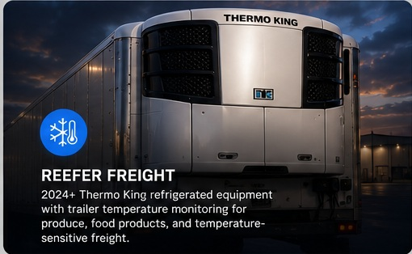
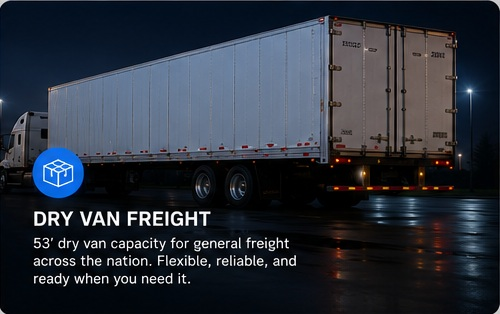
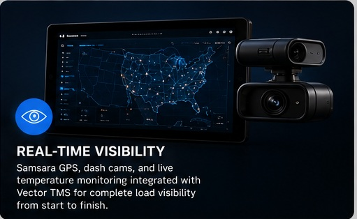
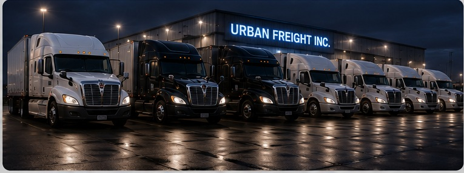
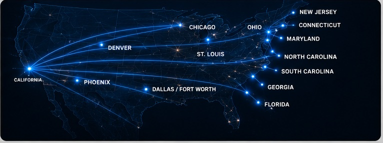

TEMPERATURE CONTROLLED
Reefer Freight
2024+ Thermo King refrigerated equipment with trailer temperature monitoring for produce, food products and temperature-sensitive freight.
Request reefer capacity →Reliable transportation across the U.S. backed by modern equipment, real-time visibility, and a team that stays directly involved from pickup through delivery.
From temperature-controlled to time-sensitive freight, our fleet moves loads across the United States for brokers, shippers and direct customers—with responsive dispatch and real-time visibility from pickup to delivery.

2024+ Thermo King refrigerated equipment with trailer temperature monitoring for produce, food products and temperature-sensitive freight.
Request reefer capacity →
53' dry van capacity for general and time-sensitive truckload freight across our nationwide network.
Request dry van capacity →
Samsara GPS, dash cams and live temperature monitoring integrated with Vector TMS for complete operational visibility from start to finish.
Talk to dispatch →Late-model tractors, refrigerated and dry van capacity, and connected fleet technology built to keep freight moving.

From California to major freight markets across the U.S., our long-haul network keeps reefer and dry van freight moving where customers need it.

Send us the lane, equipment type, and pickup window. We will get back to you with availability.